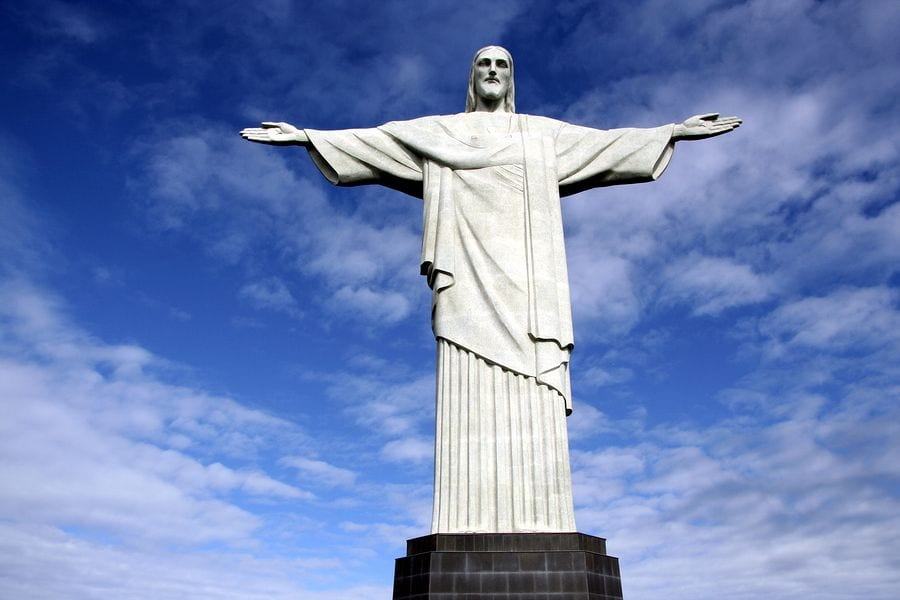

La statue du Christ Rédempteur est la petite benjamine des 7 merveilles du monde moderne. Sa construction ne date en effet que de 1926. Les autres merveilles en sont ses aînées de plusieurs millénaires pour certaines. Le projet de la statue provient d’une volonté de réaffirmer la présence catholique au Brésil, notamment à l’occasion du centenaire de l’indépendance du pays. Le mont du Corcovado, et sa spectaculaire vue panoramique, fut alors choisi pour accueillir cette colossale statue du Christ prêt à absoudre, les bras ouverts et du haut de ses 38 mètres, tous les péchés du monde.